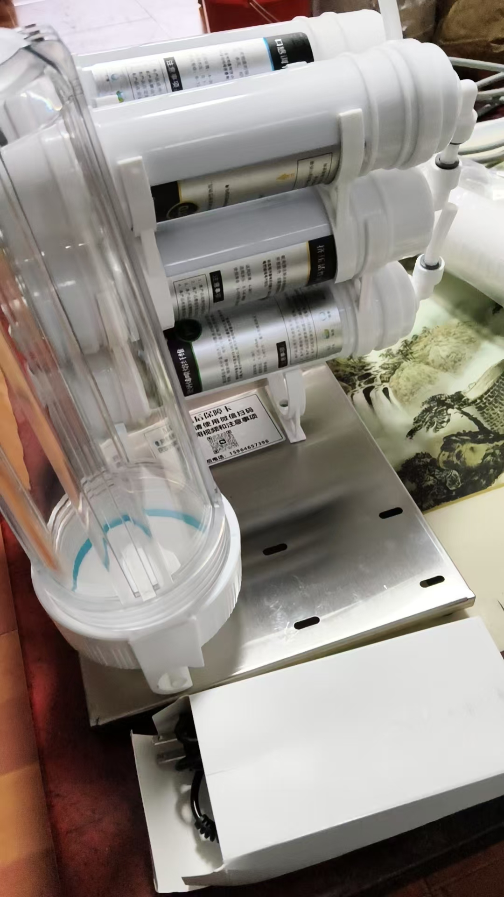

20261029只中午吃一顿自助餐，早晚把胃吃坏了
原始对话记录
白酒滤清器
[强][强][强]
最低温度五六度了
早晚穿面包服了
四季分明
有损人，胃不好，经我调理后，总算好了
现在又开始，不吃晚饭，早饭，只中午吃一顿自助餐
自助餐不是随便吃吗
一直吃到撑
说吃了三天了
我跟他说，这样吃，早晚把胃吃坏了
还不爱听，真是自作孽，不可活
不听，就随他去吧
还觉得赚了人家的便宜
真是啥人也有
这是买专业设备了？
[憨笑][憨笑][憨笑]
实际上叫，白酒催陈机
过滤杂质，催陈提香的
以下为编者整理的主题文章
编者整理 · 主题文章
一顿饭
导读：一个人胃不好，经他调理总算好了；如今改成不吃早饭晚饭，中午只吃一顿自助餐，一直吃到撑，已经三天。他劝了一句，对方不爱听。末尾是酿酒那台催陈机。
天气先变。最低温度五六度了，早晚穿面包服。四季分明。
然后说一个人。
"有损人，胃不好，经我调理后，总算好了。"
好了之后，那人改了吃法。不吃晚饭，不吃早饭，中午只吃一顿自助餐。自助餐不是随便吃吗——于是一直吃到撑。说已经吃了三天。
他劝了一句：这样吃，早晚把胃吃坏了。
"还不爱听。" 后面跟着六个字：自作孽，不可活。再往后是：不听，就随他去吧。还觉得赚了人家的便宜。
他收尾写：真是啥人也有。
后半页换了话题，是一台设备。图上有人问，这是买专业设备了？他答，实际上叫白酒催陈机，过滤杂质，催陈提香。
一页两件事，中间没有过渡。前面是有人不肯听，后面是酒在机器里慢慢变陈。
说明与免责：本站为民间修炼、民俗文化与传统文化资料的整理与记录，内容源自传承者口传与个人修习体会，仅供文化交流与研究参考，不构成医疗、健康、投资或任何功效承诺。所述内容属传统术数范畴，请理性看待；如身体不适，请及时就医。请遵守法律法规与公序良俗。